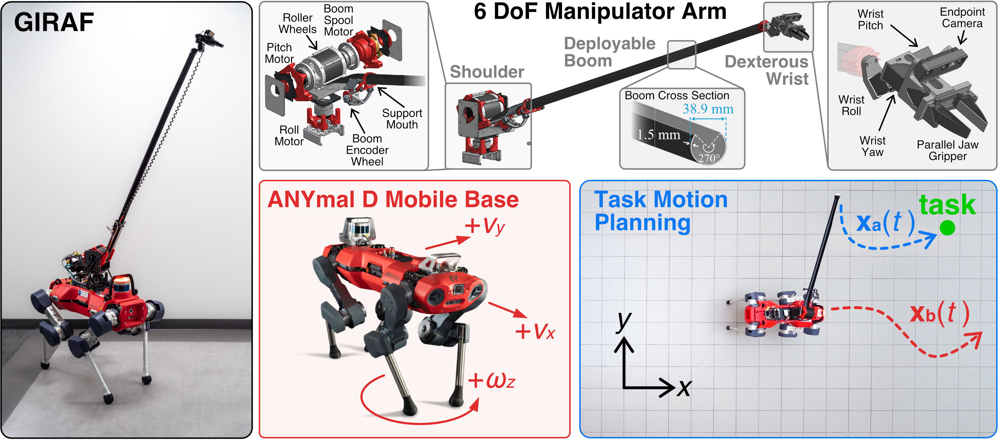
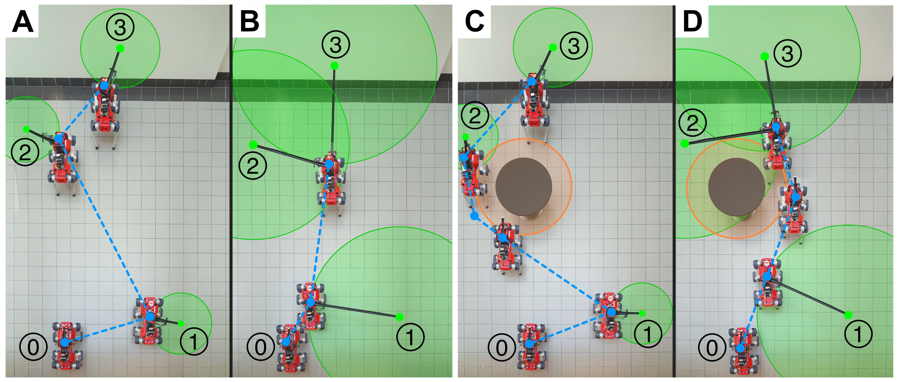
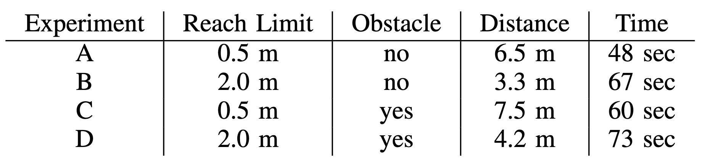

GIRAF combines an ANYmal D quadruped with a 6-DoF deployable manipulator, enabling multi-meter task access while jointly planning base placement and arm reach. Construction, inspection, and maintenance tasks in field and space environments often span workspaces larger than the robot itself. Tasks such as cable routing, large-surface cleaning, sensor installation, and fixturing benefit from extended reach, but still require mobility over partially structured terrain. GIRAF targets this middle ground by pairing a mobile base for coarse repositioning with a deployable arm for local access across distributed task points.
Sustained space and lunar surface infrastructure will require robots to build, inspect, and maintain structures that span many meters, including cable harnesses, solar arrays, habitats, and sensor networks. These tasks often occur in partially built or rough environments where repeatedly repositioning a robot is slow, risky, or energy intensive. GIRAF uses legged mobility for terrain access and a lightweight deployable boom to reduce the amount of base motion needed for distributed space infrastructure tasks.
Future slot for a short overview video introducing the ANYmal-mounted deployable arm, the hardware modules, and the reachable workspace.
GIRAF mounts a 6-DoF deployable manipulator on an ANYmal D quadruped. The base provides rough-terrain mobility and coarse repositioning, while two high-torque arm joints orient a 3 m rollable fiberglass boom. A spool drive, support rollers, and direct deployed-length encoder feedback support controlled extension, and a compact wrist with an endpoint camera and parallel-jaw gripper handles local manipulation. The onboard control stack runs in Dockerized ROS 1 Noetic.

GIRAF integrates a legged mobile base, deployable boom, dexterous wrist, and task-level planning for long-reach field manipulation.
GIRAF plans over the coupled base-arm system, balancing coarse base motion with precise long-reach manipulation. Task reachability is represented as a feasible region for the mobile base: once the base enters that region, the deployable arm can reach the task point under a specified reach limit.
Obstacles constrain the base trajectory, while the long arm can still provide task access from outside the immediate work area. The initial formulation minimizes base travel through task regions and solves the nonconvex obstacle constraint with CVXPY and DCCP.


In initial hardware experiments, increasing the reach limit from 0.5 m to 2.0 m reduced base travel from 6.5 m to 3.3 m without an obstacle, and from 7.5 m to 4.2 m with an obstacle. Execution time did not drop proportionally: long-reach trials took 67 sec and 73 sec because boom motion was conservatively rate-limited for stability.
Future slot for deployment footage showing the planned base trajectory and deployable arm reaching task locations on hardware.
These results are an initial hardware and planning framework for long-reach mobile manipulation. Future work will incorporate vision-informed grasping, assembly and fine manipulation, full-body kinematics, dynamic effects of long deployments, and richer obstacle- or risk-aware planning methods such as graphs of convex sets or sampling-based planners.
@inproceedings{wang2026giraf,
title={GIRAF - Greatly Increased Reach for Adaptive Fieldwork},
author={Stanley Wang and Venny Kojouharov and Lukas Klostermair and Mark Cutkosky},
booktitle={Workshop on Intelligent Space Robotics and Systems},
year={2026},
url={https://openreview.net/forum?id=xWFFMqySMY}
}We gratefully acknowledge support from the Stanford Robotics Center, NASA NSTGRO, the NSF Graduate Research Fellowship, and Knight-Hennessy Scholars.